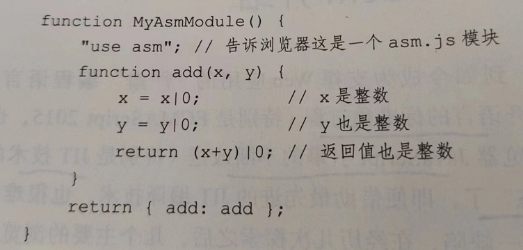
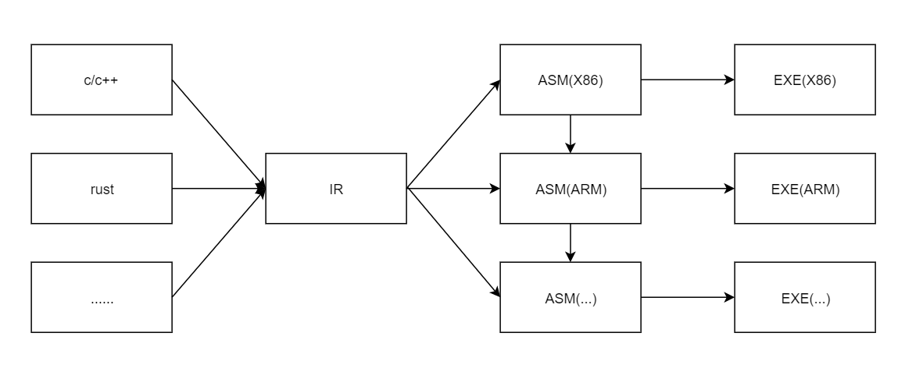
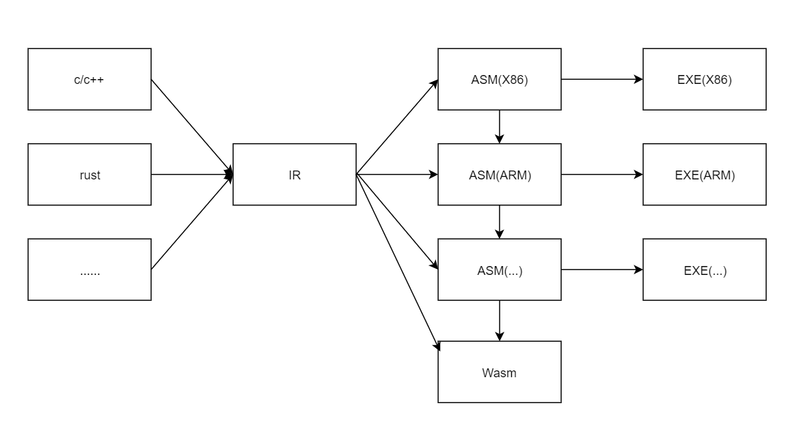
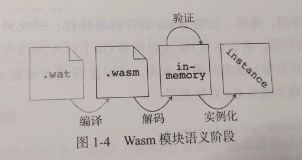
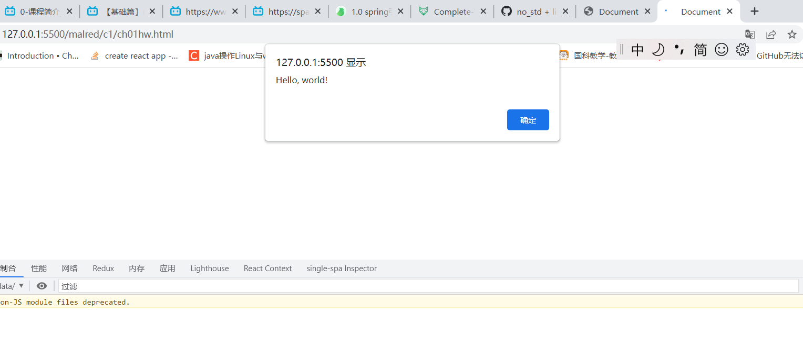
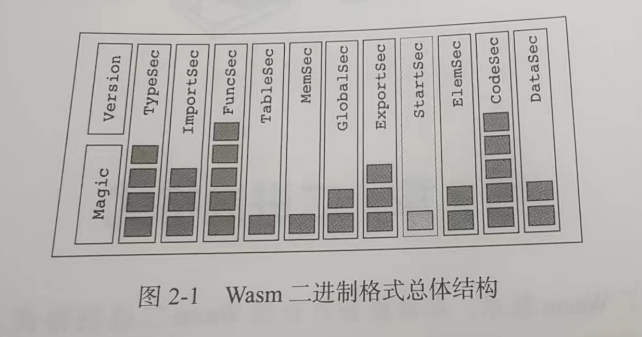

第一部分 概述
1. wasm介绍
js从玩具脚本到web开发语言的变化,离不开语言的标准化过程(特别是ECMAScript 2015,即ES6)和各大浏览器对js引擎的不断改进(特别是JIT技术),但是js的性能依然不能和本地应用比,所以几个主要浏览器厂商联合发布了WebAssembly
1.1 wasm简史
和go,rust等其他项目一样,wasm也起源于一个业余时间项目.2010年,Alon Zakai想把自己以前开发的游戏引擎移植到浏览器上允许,他认为js执行速度足够,就在业余时间编写编译器,把c++代码(通过LLVM IR)编译成js代码,这个业余项目就是Emscripten
2011年底,项目取得很大进展,Mozilla成立研究团队.由于js太过灵活,JIT编译器很难再激进的优化,于是就在2013年,由Luke Wagner,David Herman等人提出asm.js规范,asm.js是js的严格子集,减少了很多动态特性,并添加类型提示,从而帮助浏览器提升js优化空间.asm.js更适合作为编译器目标语言

asm.js代码可以跨浏览器,支持asm.js的浏览器就启用激进的JIT优化,甚至是AOT编译,而不能支持的浏览器也可以当作普通的js代码允许
但是asm.js也有缺点,那就是不够底层,如代码依然是文本、编写受限于js语法、浏览器仍然需要完成解释脚本、解释执行、收集性能指标、JIT编译等一系列步骤，如果是二进制格式的文件，可以缩小体积、减少网络传输和解析时间、选用更接近机器的字节码、AOT/JIT编译器实现起来更轻松
谷歌chrome团队则从另一个方向出发,他们的解决方案是NaCl(google native client)和PNaCl(Portable NaCl),在沙箱环境里直接执行本地代码,asm.js和NaCl互相补充,两个团队经常合作
Mozilla和Google结合两个项目的长处,合作开发了一种基于字节码的技术,WebAssembly
2017年,谷歌决定放弃PNaCl,Mozilla也基本放弃asm.js,转向支持wasm,本书完稿时,wasm已经发布了1.1版本
1.2 wasm简介
一开始,都是用机器语言写程序,后来为了提高开发效率,出现了汇编语言和高级语言,但是性能越来越低(相比机器语言)
高级语言要通过编译器编译成机器码或通过解释器直接解释执行,前者可以理解为AOP预先编译,后者可以在执行时将部分热代码即时编译成机器码执行,以提升性能(JIT)
现代编译器一般使用模块化方式设计,典型的就是分成前端、中端和后端,前端负责预处理、词法分析、语法分析、语义分析,生成便于后续处理的中间表示(IR),中端对IR进行分析和优化(如常量折叠、死代码消除、函数内联),后端生成目标代码,把IR转为平台相关的汇编代码,然后汇编器编译为机器码.


webassembly就是web汇编,是为web浏览器定制的汇编语言,应该满足:
- 层次低,尽量接近机器语言,这样浏览器才更容易进行AOT/JIT编译
- 要适合作为目标代码,由其他高级语言编译器生成
- 要在浏览器运行,必须安全可控,不能像真正的汇编代码一样可以执行任意操作,并且必须是平台无关的,才能跨浏览器执行
从高级语言编译器的角度看,WASM是目标代码,从浏览器角度看,WASM更像IR,由AOP/JIT编译器编译成平台相关的机器码.所以,WASM采用了虚拟机/字节码技术,并且定义了紧凑的二进制格式
wasm特点:
规范 目前有三分规范,《核心规范描述了wasm模块的结构和语义》,这些是平台无关的,任何wasm实现都应该满足这些语义.《JavaScript API规范》和《Web API规范》,则是平台相关的.
模块 是wasm程序编译、传输和加载的单位.wasm规范定义了两种模块格式: 二进制格式和文本格式.如果和汇编语言做类比,二进制格式相当于目标文件或可执行文件格式,文本格式则相当于汇编语言.使用汇编器可以将文本格式编译为二进制格式,使用反汇编器可以将二进制格式反编译为文本格式
(1)二进制格式: wasm模块的主要编码格式,文件一般以.wasm为后缀.
(2)文本格式: 主要是为了开发者方便理解wasm模块,或者编写小型测试代码,文本格式可以简写为WAT(webassembly text),文件以.wat为后缀指令集 采用栈式虚拟机和字节码
验证 wasm模块必须安全可靠,不能有恶意行为.为了保证这一点,wasm模块包含大量类型信息,绝大多数问题通过静态分析在代码执行前被发现,少数推迟到运行时检查
wasm还有另一种格式,wasm实现(如编译器)通常会把二进制模块解码为内部形式(即内存格式,如c/c++/go结构体),然后再进行后续处理
从二进制到最终执行分为3阶段: 解码、验证、执行.解码阶段将二进制模块解码为内存格式;验证阶段对模块进行静态分析,确保模块的结构满足规范要求,且函数的字节码没有不良行为;执行阶段分为实例化和函数调用两个阶段.

1.3 准备工作
下载源代码
http://github.com/zxh0/wasmgo-book
本书主要涉及GO、WAT、Rust、JavaScript,go是用来实现那WASM的
安装go
go1.11推荐安装1.14
安装rust
# 添加wasm编译目标
rustup target add wasm32-unknown-unknown
安装WABT
是wasm二进制工具箱,提供很多处理wasm二进制格式的工具.
https://www.cnblogs.com/tonghaolang/p/9253734.html
1.4 你好 Wasm
#![no_std]
#![no_main]
#[panic_handler]
fn panic(_: &core::panic::PanicInfo) -> ! {
loop {}
}
extern "C" {
fn print_char(c: u8);
}
#[no_mangle]
pub extern "C" fn main() {
unsafe {
let s = "Hello, world!\n";
for c in s.as_bytes() {
print_char(*c);
}
}
}
编译rust为wasm
cargo build --target wasm32-unknown-unknown
<!DOCTYPE html>
<html lang="en">
<head>
<meta charset="UTF-8">
<meta name="viewport" content="width=device-width, initial-scale=1.0">
<title>Document</title>
</head>
<body>
<script>
var str = ""
var importObj = {
env: {
print_char: (c) => {
str += String.fromCharCode(c);
if (c == 10) {
alert(str);
}
}
}
};
fetch('ch01hw.wasm')
.then(res => res.arrayBuffer())
.then(buf => WebAssembly.instantiate(buf, importObj))
.then(({ module, instance }) => instance.exports.main())
</script>
</body>
</html>
这里是在rust里声明,然后在js里定义print_char()函数
相要看到效果,需要把wasm和html文件放到web服务器(我这里是使用Five Server,一个vscode插件)

1.5 本章小结
wasm让c、c++、rust、go也可以运行到浏览器上了,而且是接近本地程序运行的速度
第二部分 二进制和文本格式
2. 二进制格式
2.1 二进制格式介绍
2.1.2 Wasm二进制格式总体结构
wasm和java类文件、lua二进制块一样,格式也是以魔数和版本号开头.在魔数和版本号后面是模块的主体内容,这些内容被分别放在不同的端(section/segment).段中可能包含多个项目,wasm规范一共定义了12种段,并给每种段分配了ID(0-11),除了自定义段,其他每种段都最多只能出现一次,而且必须按照ID递增的顺序出现

假设将下面这段go语言编译成wasm
package main
import "fmt"
const PI float32 = 3.14
type type0 = func(a,b int32) int32
type type1 = func()
type type2 = func(ptr, len int32)
func Add(a,b int32) int32 { return a+b }
func Sub(a,b int32) int32 { return a-b }
func Mul(a,b int32) int32 { return a*b }
func Div(a,b int32) int32 { return a/b }
func Main(){
fmt.Println("Hello, world!")
}
2.1.2.1 类型段(ID 1)
该段列出所有wasm中用到的所有函数类型(又叫函数签名,或函数原型).上面的go代码里有3种不同签名的函数(加减乘除,main,println),所以类型段中包含3个函数签名,前两个应该是(int32,int32)->(int32)和()->()
2.1.2.2 函数段和代码段(ID 2和ID 7)
这两个段列出模块所有的导入项和导出项,多个模块可以通过导入导出链接起来.上面的go代码有1个导入项(fmt.println)和5个导出项(首字母大写的加减乘除函数和常量PI),因此导出段有一个全局变量和4个函数
2.1.2.3 函数段和代码段(ID 3和ID 10)
内部函数信息被分开存储在两个段中,函数段放的是代码段对应的签名索引,代码段放的是内部函数的局部变量信息和字节码,上面的go代码函数段内容应该是[0,0,0,0,1],分别指向加减乘除和main函数(不包含导入的函数)
2.1.2.4 表段和元素段(ID 4和ID 9)
表段列出模块内定义的所有表,元素段列出表初始化数据.wasm规范规定模块最多只能导入或定义一张表,即使模块有表段,里面也只能有一个项目.表主要和间接函数调用有关.